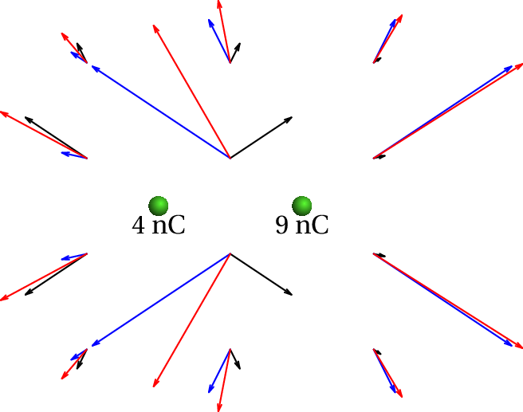

A explicação da força entre partículas através da existência de um
campo vem desde a época em que foi desenvolvida a teoria da gravitação
universal. A dificuldade em aceitar que uma partícula possa afetar
outra partícula distante, sem existir nenhum contato entre elas, foi
ultrapassada na física clássica com o conceito do campo de força. No
caso da força eletrostática, o campo mediador que transmite a força
eletrostática foi designado por éter; a luz seria uma onda que se
propaga nesse éter. No século XIX foram realizadas inúmeras
experiências para detetar a presença do éter, sem qualquer sucesso. No
fim do século chegou-se à conclusão de que tal éter não existe. No
entanto, o campo elétrico tem existência física, no sentido de que
transporta energia e que pode subsistir mesmo após desaparecerem as
cargas que o produzem. Na física quântica a interação elétrica é
explicada como uma troca de partículas mediadoras da força, que são as
mesmas partículas da luz, os fotões; cada carga lança alguns fotões
que são absorvidos pela outra carga. Neste capítulo considera-se a
teoria clássica que concebe o campo como um fluido invisível que
arrasta as cargas elétricas.
6.1. Campo elétrico produzido por cargas pontuais
O campo elétrico produzido por uma carga pontual já foi estudado no
capítulo 1. A figura 1.6 mostra o campo repulsivo produzido
por uma carga positiva.
A equação 1.5 para o módulo do campo produzido por uma carga
pontual pode ser escrita de forma vetorial. Se a carga
estiver na
origem das coordenadas, o resultado obtido é:
(6.1)
onde
é a distância até a origem e
o versor na direção
radial, afastando-se da carga. Se a carga for negativa, a equação
anterior ainda é válida e o vetor
aponta no sentido oposto
de
(campo atrativo). O versor
obtém-se dividindo o
vetor de posição
pelo seu módulo,
. Se a carga não
estiver na origem mas numa posição
, a equação 6.1
pode ser generalizada facilmente, obtendo-se:
(6.2)
O campo produzido por um sistema de cargas pontuais obtém-se somando
vetorialmente os campos produzidos por cada uma das cargas. Por
exemplo, a figura 6.1 mostra os campos produzidos em alguns
pontos por cada uma de duas cargas pontuais de 4 nC e 9 nC, e o campo
resultante nesses pontos, igual à soma vetorial dos campos das duas
cargas.

Figura 6.1: Campos produzidos por duas cargas de 4 nC e 9 nC em alguns pontos,
e o campo resultante nesses pontos.
A equação 6.2 pode ser generalizada para um sistema de
cargas pontuais. Em coordenadas cartesianas, se as cargas
,
, …,
estiverem nos pontos (
,
), (
,
), …, (
,
) de um plano O
(a generalização para
o espaço O
deverá ser evidente), o resultado é:
(6.3)
(6.4)
Exemplo 6.1
Represente, no plano O
, as linhas do campo elétrico produzido por
duas cargas de 4 nC e 9 nC afastadas de 1 cm entre si.
Resolução. Primeiro escolhe-se um sistema de unidades; medindo
as cargas em nC e as distâncias em cm, o valor da constante de coulomb
é:
Como tal, se o valor
for usado, as unidades do campo serão
µN/nC. Arbitrando que a carga de 4 nC está na origem e a carga de
9 nC no ponto (1, 0) e substituindo nas equações 6.3 e
6.4 obtém-se:
Este campo já foi representado em alguns pontos na figura 6.1.
Para traçar as linhas de campo elétrico, pode usar-se o programa
plotdf do Maxima.
A seguir a este último comando é necessário clicar em alguns pontos
para obter as linhas de campo que aparecem na
figura 6.2. Note-se que a expressão obtida para
é
igual a zero em qualquer ponto do eixo dos
(
), com exceção
dos pontos onde estão as cargas. Igualando
e
obtêm-se
as coordenadas do ponto onde o campo é nulo,
e
, que é um
ponto de sela como se vê na figura 6.2. Os pontos onde estão
as duas cargas positivas são nós repulsivos.
Figura 6.2: Linhas de campo elétrico de duas cargas pontuais de 4 nC e 9 nC
colocadas na origem, e no ponto (1, 0).
6.2. Propriedades das linhas de campo elétrico
O campo elétrico pode ser representado por vetores que indicam o valor
do campo em cada ponto do espaço, como foi feito na
figura 6.1. O problema é que o campo varia rapidamente com
a distância, o que faz com que os vetores sejam muito grandes em alguns
pontos e muito pequenos noutros.
A representação por linhas de campo é mais conveniente. As linhas de
campo seguem a direção do campo e em cada ponto dessas linhas, o campo
é tangente à linha e no sentido indicado pelas setas.
As linhas de campo elétrico têm várias propriedades:
Na vizinhança de uma carga pontual positiva há linhas que saem em
todas as direções e perto de uma carga negativa há linhas que entram
em todas as direções (ver figura 6.3).
Figura 6.3: Linhas de campo elétrico de uma carga pontual negativa
(esquerda) ou positiva (direita).
Duas linhas de campo nunca se cruzam; num ponto de cruzamento o campo
teria duas direções diferentes, o que não é possível.
No próximo capítulo demonstra-se que a matriz jacobiana correspondente
ao campo elétrico é sempre simétrica. Isso implica que os valores
próprios dessa matriz são sempre reais e nunca complexos. Assim, os
únicos pontos de equilíbrio que podem existir num campo elétrico são
nós e pontos de sela. Um nó pode ser atrativo ou repulsivo; se for
atrativo é um ponto onde existe uma carga pontual negativa e se for
repulsivo é um ponto onde existe uma carga pontual positiva. Os pontos
de sela são pontos onde o campo é nulo, sem que haja carga nesse
ponto.
No exemplo apresentado na figura 6.2, existe um ponto de sela em
(0.4, 0), onde o campo é nulo. Existem duas linhas de campo que terminam
nesse ponto de sela e duas linhas de campo que aí começam.
Outro exemplo são as linhas de campo de um dipolo
elétrico, formado por duas cargas iguais de
sinais opostos. Admitindo que as duas cargas estão localizadas nos
pontos (-1, 0) e (1, 0), podem traçar-se as linhas de campo com os
seguintes comandos:
Figura 6.4: Linhas de campo elétrico de um dipolo.
Uma distribuição contínua de cargas pode ser aproximada por uma série
de cargas pontuais. Por exemplo, se existirem cargas distribuidas
uniformemente no segmento do eixo dos
entre
e
,
pode-se imaginar um sistema de cargas pontuais, equidistantes, sobre o
segmento entre
e
. Os comandos de Maxima para traçar as
linhas de campo dessas 7 cargas pontuais são:
(%i7) Ex: sum ((x-i)/((x-i)^2+y^2)^(3/2), i, -3, 3)$
(%i8) Ey: sum (y/((x-i)^2+y^2)^(3/2), i, -3, 3)$
(%i9) plotdf ([Ex, Ey], [x,-20,20], [y,-20,20], [vectors,"blank"])$
Figura 6.5: Campo elétrico de um sistema de 7 cargas pontuais no eixo dos
.
6.3. Fluxo
O campo elétrico pode ser compreendido melhor usando o conceito de
fluxo. Define-se o fluxo elétrico por analogia com um fluído
incompressível. No escoamento do fluído, as linhas de campo são
tangentes à velocidade do fluído em cada ponto e o fluxo do campo de
velocidades é igual ao volume de fluido que passa através da
superfície, por unidade de tempo.
Através de uma superfície de área
, perpendicular à velocidade do
fluido e se o módulo da velocidade,
, for constante em todos os
pontos dessa superfície, o volume de fluido que passa através da
superfície, por unidade de tempo, é igual a
. A
figura 6.6 mostra dois exemplos de linhas de campo e em cada
caso uma superfícies perpendicular às linhas de campo.
Figura 6.6: Superfícies perpendiculares às linhas de campo.
Por analogia com o fluxo do fluido, no caso de uma superfície de área
, perpendicular às linhas de campo eléctrico, como na
figura 6.6, se o módulo
do campo é constante nessa
superfície, define-se o fluxo elétrico
através da superfície igual ao produto do módulo do campo vezes a área
da superfície:
(6.5)
Figura 6.7: Tubo de fluxo.
O volume delimitado pelas linhas de campo que passam por uma curva
fechada, por exemplo, a fronteira da superfície S1 na
figura 6.7,
chama-se tubo de fluxo.
Usando a analogia com o fluido
incompressível, se não existem dentro do tubo pontos onde entra ou sai
fluído, então o fluxo é o mesmo em todas as secções transversais do
tubo, independentemente da curvatura ou inclinação dessas secções. Por
exemplo, no tubo de fluxo da figura 6.7, o volume de fluido
que passa pelas três superfícies S1, S2 e S3, por
unidade de tempo, deve ser o mesmo e, como tal, o fluxo através dessas
superfícies, ou de qualquer outra secção do tubo, é igual.
Essa propriedade dos tubos de fluxo pode usar-se para calcular o fluxo
de um campo elétrico uniforme,
, através de uma superfície
plana de área
, que não seja perpendicular às linhas de campo. O
ângulo de inclinação das linhas de campo em relação ao versor normal à
superfície,
, é
na figura 6.8. O fluxo
através da superfície inclinada é igual ao fluxo através da projeção
dessa superfície no plano perpendicular às linhas de campo, ou seja
através da superfície a tracejado na figura 6.8, que faz um
ângulo
com a superfície inclinada. Os dois fluxos são iguais
porque a superfície inclinada e a superfície a tracejado fazem parte
do mesmo tubo de fluxo, formado pelas linhas de campo que as
atravessam.
Figura 6.8: Superfície inclinada em relação às linhas de campo.
A área da superfície a tracejado é
, onde
é
ângulo entre o campo e a perpendicular ao plano
(figura 6.8). Como essa superfície a tracejado sim é
perpendicular às linhas de campo, o fluxo através dela é igual ao
módulo do campo vezes a sua área:
(6.6)
Figura 6.9: Campo e versor normal.
A figura 6.9 mostra três possíveis campos na superfície. O
campo
faz um ângulo agudo com o versor normal e, por isso,
produz fluxo positivo, ou seja, fluxo que passa no mesmo sentido do versor
normal. O campo
é perpendicular à superfície e, como tal, o
seu produto escalar com o versor normal é nulo e esse campo não produz
nenhum fluxo. Finalmente, o campo
faz um ângulo obtuso com o
versor normal, produzindo assim fluxo negativo, ou seja, fluxo no sentido
oposto do versor normal.
O produto escalar
é a componente do campo na
direção normal à superfície. Como tal, o fluxo elétrico é a componente
normal do campo vezes a área da superfície.
No caso de campos não uniformes e superfícies curvas, divide-se a
superfície em
segmentos com áreas
(
),
como na figura 6.10. Se o número de segmentos for elevado e
cada um deles for suficientemente pequeno, podem ser aproximados por
pequenos planos.
Figura 6.10: Superfície dividida em segmentos menores.
No plano infinitesimal de área
o campo será
,
aproximadamente constante, de forma que o fluxo
nele é
dado pela equação 6.6. O fluxo total na superfície é igual à
soma de todos os fluxos nos pequenos planos.
(6.7)
A aproximação torna-se exata no limite em que
se aproxima de
infinito. Essa soma de uma função (neste caso a componente normal do
campo) vezes a área da superfície chama-se integral de
superfície, escrito da forma seguinte:
(6.8)
Nos casos estudados neste capítulo, esse integral de superfície pode
ser obtido facilmente, sem ser preciso entrarmos nos pormenores do
calculo de integrais de superfície.
6.4. Lei de Gauss
O campo elétrico produzido por uma distribuição de cargas é a
sobreposição dos campos produzidos por muitas cargas pontuais. Convém
então analisar o fluxo elétrico produzido pelo campo de uma única
carga pontual. Em relação a uma superfície S fechada, a carga pode
estar ou fora ou dentro dessa superfície, tal como mostra a
figura 6.11. Se a carga estiver fora, apenas algumas linhas
de campo atravessam a superfície; se a carga estiver dentro de S,
todas as linhas de campo a atravessam.
Figura 6.11: Carga pontual fora de uma superfície fechada e dentro dela.
Quando a carga pontual está dentro da superfície S, qualquer esfera
com centro na carga também é atravessada por todas as linhas de campo
elétrico e, como tal, encontra-se no mesmo tubo de fluxo de S
(figura 6.12). O fluxo elétrico através de S pode ser
determinado calculando o fluxo que atravessa a esfera. No lado direito
da figura 6.12 mostra-se o campo num ponto da esfera.
Figura 6.12: Fluxo produzido por uma carga pontual dentro de uma superfície
fechada.
Na superfície esférica, o campo é sempre perpendicular e o seu módulo
é sempre igual a
, onde
é o raio da esfera. Como
tal, o fluxo na esfera pode obter-se usando a equação 6.5. A
área da esfera é
, e multiplicando pelo módulo do
campo obtém-se o fluxo:
(6.9)
Ou seja que, o fluxo total produzido pela carga pontual
, através
de qualquer superfície fechada em que a carga esteja no interior, é
sempre
, independentemente do tamanho da
superfície. No caso de superfícies fechadas, é habitual calcular-se
sempre o fluxo para fora da superfície. Assim sendo, eliminando o
valor absoluto na carga e escrevendo o fluxo como
,
o sinal da carga dará o sinal correto do fluxo: se a carga for
positiva há fluxo a sair da superfície, mas se a carga for negativa o
fluxo está a entrar dentro dela.
Se a carga
está fora de S, as linhas de campo que atravessam a
superfície estão dentro de um ângulo sólido
, menor que o
ângulo total
da esfera toda
(figura 6.13). Se imaginarmos que a carga
é uma fonte de luz, esse ângulo sólido é a sombra projetada pela
superfície S numa esfera; uma parte S1 da superfície estará
iluminada e a outra parte, S2, estará na
escuridão. Se
for positiva, pela superfície S1 entra fluxo
elétrico e esse mesmo fluxo sai todo pela superfície S2; se
for
negativa, o mesmo fluxo que entra por S2 sai por S1. Como tal, o
fluxo total através de S é nulo.
Figura 6.13: Carga pontual fora de uma superfície fechada.
Conclui-se então que o fluxo elétrico devido a uma carga pontual
é
nulo em qualquer superfície fechada, se a carga estiver fora da
superfície e igual a
se a carga estiver dentro da
superfície.
Uma distribuição de carga pode ser dividida em várias cargas pontuais
,
, …,
, e o fluxo total através de uma superfície
fechada S será igual à soma dos
fluxos produzidos por cada uma das
cargas pontuais. As cargas que se encontram no exterior de S não
produzem fluxo, e cada carga
que esteja dentro de S produz fluxo
. Como tal, o fluxo total através da superfície
fechada S é:
(6.10)
onde
é a carga total no interior da superfície
S. Esta equação chama-se lei de Gauss:
O fluxo elétrico através de qualquer superfície fechada é igual
ao valor da carga total no interior da superfície, multiplicado por
.
Se a carga total no interior for positiva, o fluxo é positivo,
indicando que há linhas de campo a sairem da superfície. Se a carga
total for negativa, o fluxo é negativo porque há linhas de campo a
entrar na superfície.
O fluxo elétrico total à volta de uma carga pontual é diretamente
proporcional ao valor da carga. Em alguns casos é possível desenhar um
número de linhas de campo proporcional à carga, para dar uma ideia
mais aproximada do valor do fluxo em diferentes regiões; por exemplo,
na figura 6.2 foram desenhadas 8 linhas de campo a sairem da
carga de 4 nC, e 18 linhas a sairem da carga de 9 nC.
A lei de Gauss é muito útil para calcular campos elétricos de sistemas
com simetria, como se verá nas seções seguintes.
Exemplo 6.2
Um eletrão encontra-se no centro de um cubo cuja aresta mede
nm. Determine o fluxo elétrico através de uma das faces do cubo.
Resolução. A superfície total do cubo é fechada e
portanto o fluxo através do dele pode calcular-se facilmente usando a
lei de Gauss:
A carga interna
é a carga do eletrão
(
C). Assim, o fluxo total através do da
superfície do cubo é:
Por simetria, o fluxo através de cada face deve ser o mesmo, pelo que
o fluxo numa face é a sexta parte do fluxo total no cubo:
nN·m2/C. O sinal negativo do resultado indica que o fluxo
é para dentro do cubo.
6.4.1. Campo de um plano
Considere-se um plano, com carga distribuída uniformemente. Visto em
corte, o plano aparece como um segmento de reta, e as linhas de campo
são semelhantes às linhas representadas na figura 6.5.
Nas regiões perto da zona central do plano, as linhas de campo são
aproximadamente paralelas entre si. Quanto maior for o plano, maior é
a região onde as linhas são aproximadamente paralelas. No caso
idealizado de um plano infinito, as linhas são mesmo paralelas e o
valor do campo depende apenas da distância ao plano, já que a
aparência do plano é a mesma em qualquer ponto.
Para calcular o campo elétrico usando a lei de Gauss, imagine-se um
cilindro com a base e o topo paralelos ao plano, como se mostra na
figura 6.14.
Figura 6.14: Cilindro imaginário usado para calcular o campo do plano.
As paredes laterais do cilindro não são atravessadas pelo fluxo
elétrico, porque o campo é paralelo à superfície. Em cada uma das
tampas circulares do cilindro, o campo é perpendicular e tem módulo
constante, pois todos os pontos na tampa estão à mesma distância do
plano. O fluxo na base e no topo do cilindro é então
, em que
é a área da base do cilindro e o fluxo total através da superfície
do cilindro é:
(6.11)
De acordo com a lei de Gauss, esse fluxo também é igual a:
(6.12)
onde
é a carga na parte do plano que está dentro do cilindro.
Igualando as duas últimas equações obtém-se o módulo do campo:
(6.13)
em que
é a carga superficial,
isto é, carga por unidade de área:
.
6.4.2. Campo de um fio retilíneo
Figura 6.15: Linhas de campo de um fio retilíneo e superfície cilíndrica
usada para calcular o campo.
Considere-se um fio retilíneo muito comprido, com carga distribuída
uniformemente. As linhas de campo deverão ter a direção radial.
Imaginando uma superfície fechada que é um cilindro de raio
e
altura
, com eixo sobre o fio, como mostra a figura 6.15,
conclui-se que o fluxo é nulo nas tampas circulares do cilindro, pois
sobre elas o campo é paralelo à superfície; na parede lateral do
cilindro, o campo é perpendicular e com módulo constante. Assim, o
fluxo total será:
(6.14)
onde
é o módulo do campo à distância
do fio. De acordo com a
lei de Gauss, esse fluxo dever ser também igual a
(6.15)
onde
é a carga do fio que está dentro do cilindro S. Igualando as
duas equações anteriores, obtém-se o módulo do campo:
(6.16)
onde
é a carga linear (carga
por unidade de comprimento):
.
6.4.3. Campo de uma esfera condutora
Numa esfera condutora, com carga
e raio
, a força repulsiva
entre as cargas do mesmo sinal, faz com que as cargas se distribuam de
modo uniforme sobre a superfície da esfera. Existe então simetria
esférica e as linhas de campo devem apontar na direção radial.
Para calcular o campo, imagine-se uma esfera de raio
, concêntrica
com a esfera condutora. O campo é perpendicular à superfície e tem
módulo constante
; como tal, o valor do fluxo elétrico é:
(6.17)
Como a carga está distribuída na superfície da esfera condutora, no se
interior não existe carga e, segundo a lei de Gauss, o fluxo através
da esfera de raio
será nulo, se
, ou igual a
se
. Em consequência, o campo elétrico é nulo
no interior da esfera, e fora dela tem módulo:
(6.18)
que é mesma expressão do campo produzido por uma carga
concentrada
no centro da esfera. Este é o mesmo resultado encontrado no
apêndice B, usando um método mais complicado
(integração).
Perguntas
(Para conferir a sua resposta, clique nela.)
Um plano com 2500 cm2 de área tem uma carga total de 20 nC,
distribuida uniformemente. O módulo do campo elétrico perto do plano é,
aproximadamente:
18.1 mN/C
4.52 kN/C
1.81 N/C
45.2 N/C
0.452 N/C
Uma esfera condutora de 3 cm de raio, isolada e com carga positiva,
produz um campo de módulo 36 µN/nC, num ponto que se encontra a 1 cm
da superfície da esfera. Calcule a carga total da esfera.
3.6 nC
0.4 nC
1.6 nC
6.4 nC
1.2 nC
Num sistema de coordenadas cartesianas (
,
,
) (em metros),
existe uma carga pontual de 2 nC em (1,0,0), uma carga pontual de
nC em (0,2,0) e uma carga pontual de 3 nC em (0,0,4). Calcule o
fluxo elétrico (em unidades SI) através de uma esfera de raio 3 m, com
centro na origem.
Uma esfera isoladora de raio 1 m tem carga distribuída de forma
desconhecida. O fluxo do campo elétrico criado por essa esfera através
de uma superfície esférica de raio 4 m, concêntrica com a esfera
isoladora, é
N·m2/C. Qual é o fluxo do campo
elétrico através de uma superfície esférica de raio 2 m concêntrica
com a esfera isoladora?
N·m2/C
N·m2/C
N·m2/C
N·m2/C
N·m2/C
Se numa superfície fechada o campo elétrico aponta para dentro da
superfície em todos os pontos, o que é que podemos concluir?
Existe carga positiva dentro da superfície.
Existe carga negativa dentro da superfície.
Não existe nenhuma carga dentro da superfície.
O campo é necessariamente perpendicular à superfície.
O campo é necessariamente paralelo à superfície.
Problemas
Na atmosfera existe um campo eléctrico que aponta na vertical, para
baixo. A nível do mar, o módulo desse campo, é aproximadamente 120 N/C
e diminui em função da altura; 2 km acima do nível do mar o campo é
aproximadamente 66 N/C. Que pode concluir acerca do sinal das cargas
livres nos dois primeiros quilómetros da atmosfera? Calcule a carga
volúmica média nessa região.
Uma carga pontual de 5 nC encontra-se a 6 cm de um fio retilíneo muito
comprido, com carga linear constante de 7 nC/cm. Calcule a força
elétrica sobre o fio (sugestão: calcule melhor a força do fio sobre a
carga pontual, que é mais fácil de calcular, e pela lei de ação e
reação deverá ter o mesmo módulo).
A figura mostra as linhas de campo elétrico de duas partículas
carregadas, uma delas na origem, e a outra no ponto (1, 0). No ponto
(3, 0) existe um ponto de sela. Sabendo que a carga da partícula na
origem é 18 nC, calcule a carga da outra partícula.
Duas cascas esféricas concêntricas, com raios
e
, encontram-se
uma dentro da outra (
). A casca esférica interna, de raio
,
tem uma carga total
distribuída uniformemente na sua superfície, e
a casca externa tem uma carga
, distribuída uniformemente na sua
superfície. Usando a lei de Gauss, calcule o campo elétrico nos pontos
dentro da casca interna, entre as duas cascas e por fora da casca
externa.
Uma esfera de raio
tem uma carga elétrica
distribuída
uniformemente dentro do seu volume. Usando a lei de Gauss, calcule o
módulo do campo elétrico num ponto a uma distância
do centro da
esfera. Considere os casos
e
.
Uma partícula pontual com massa igual a 25 g e carga de 50 nC
encontra-se pendurada de um fio de 7 cm que está colado a um plano
vertical. O plano vertical tem uma carga superficial constante
nC/cm2 e pode ser considerado infinito. Calcule
o ângulo
que o fio faz com o plano vertical.
Para simular as cargas num condensador de placas planas paralelas,
considere um sistema de 13 cargas de valor +1 nos pontos (
,5),
(
,5),..., (5,5) e (6,5), e 13 cargas de valor
nos pontos
(
,
), (
,
),..., (5,
) e (6,
). Usando Maxima,
desenhe o campo elétrico e as linhas de campo (o desenho é
independente das unidades que sejam usadas; pode admitir
).
Respostas
Perguntas:1. B. 2. D. 3. C.
4. C. 5. B.
Problemas
Existe carga positiva, com carga volúmica média igual a
C/m3.
1.05 mN
nC.
Dentro da casca interna e fora da casca externa, o campo é nulo.
Entre as duas cascas, o campo é na direção radial e com módulo
, onde
é a distância desde o centro das esferas.
Se
,
. Se
,
62.99°
O gráfico das linhas de campo pode ser obtido com os seguintes comandos:
Calcule a carga por unidade de área e multiplique por
para obter o módulo do campo.
(clique para continuar)
Pergunta 1, resposta B: Certa
(clique para continuar)
Pergunta 1, resposta C: Errada
Calcule a carga por unidade de área e multiplique por
para obter o módulo do campo.
(clique para continuar)
Pergunta 1, resposta D: Errada
Tem um problema de unidades. Se usa unidades SI, deve passar a área
para m2 e a carga para coulomb. Se usa cm2 e nC,
deve converter o valor de
,
N·m2/C2, para as unidades
N·cm2/nC2
(clique para continuar)
Pergunta 1, resposta E: Errada
Se usa o valor
para
, deve passar a área de
cm2 para m2 e a carga para coulomb. O valor da
constante k, em unidades de N·cm2/nC2 não
é 9.
(clique para continuar)
Pergunta 2, resposta A: Errada
A distância desde o centro da esfera até o ponto em questão é 4 cm e
não 3 cm.
(clique para continuar)
Pergunta 2, resposta B: Errada
A distância desde o centro da esfera até o ponto em questão é 4 cm e
não 1 cm.
(clique para continuar)
Pergunta 2, resposta C: Errada
O campo elétrico é igual a
, vezes a carga, a dividir pela
distância ao quadrado.
(clique para continuar)
Pergunta 2, resposta D: Certa
(clique para continuar)
Pergunta 2, resposta E: Errada
A distância desde o centro da esfera até o ponto em questão é 4 cm e
não 3 cm.
(clique para continuar)
Pergunta 3, resposta A: Errada
As 3 cargas não estão todas no interior da esfera. Unicamente as
cargas que estão no interior produzem fluxo através da esfera.
(clique para continuar)
Pergunta 3, resposta B: Errada
A carga total no interior da esfera é negativa e, por isso, o fluxo
também deve ser negativo.
(clique para continuar)
Pergunta 3, resposta C: Certa
(clique para continuar)
Pergunta 3, resposta D: Errada
Duas das 3 cargas estão no interior da esfera e o fluxo total através
da esfera é a soma dos fluxos dessas duas cargas.
(clique para continuar)
Pergunta 3, resposta E: Errada
Duas das 3 cargas estão no interior da esfera e o fluxo total através
da esfera é a soma dos fluxos dessas duas cargas.
(clique para continuar)
Pergunta 4, resposta A: Errada
O fluxo através das duas esferas é igual, porque a carga interna nelas
também é igual.
(clique para continuar)
Pergunta 4, resposta B: Errada
O fluxo através das duas esferas é igual, porque a carga interna nelas
também é igual.
(clique para continuar)
Pergunta 4, resposta C: Certa
O fluxo através das duas esferas é igual, porque a carga interna nelas
também é igual.
(clique para continuar)
Pergunta 4, resposta D: Errada
O fluxo através das duas esferas é igual, porque a carga interna nelas
também é igual.
(clique para continuar)
Pergunta 4, resposta E: Errada
O fluxo através das duas esferas é igual, porque a carga interna nelas
também é igual.
(clique para continuar)
Pergunta 5, resposta A: Errada
Se a carga fosse positiva, o campo apontaria para fora.
(clique para continuar)
Pergunta 5, resposta B: Certa
O fluxo negativo implica carga negativa.
(clique para continuar)
Pergunta 5, resposta C: Errada
Se não houvesse carga, o fluxo através da superfície fechada seria
nulo, mas como o campo aponta sempre para dentro, o fluxo não é nulo.
(clique para continuar)
Pergunta 5, resposta D: Errada
O campo pode apontar para dentro da superfície sem ser necessário que
seja perpendicular a ela.
(clique para continuar)
Pergunta 5, resposta E: Errada
Se o campo fosse paralelo, não apontaria nem para dentro nem para fora
da superfície.


Calcule a carga por unidade de área e multiplique por para obter o módulo do campo.
(clique para continuar)